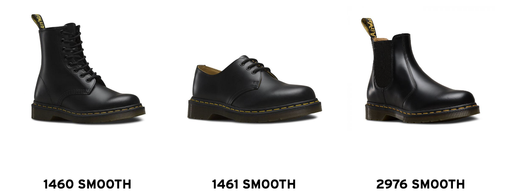
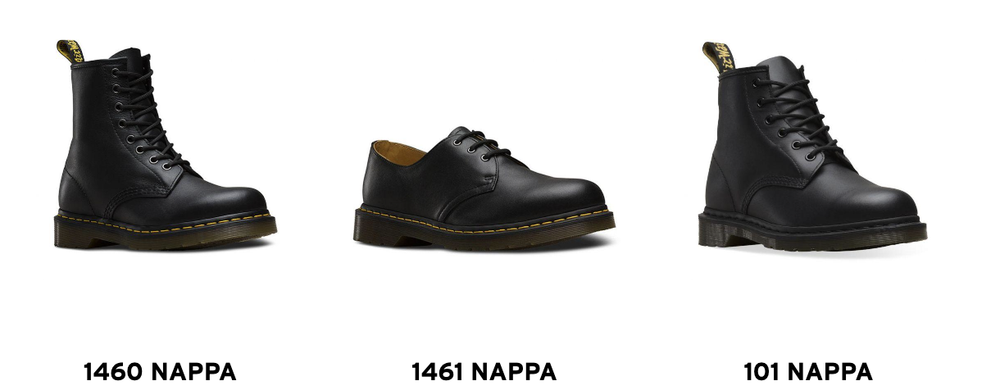
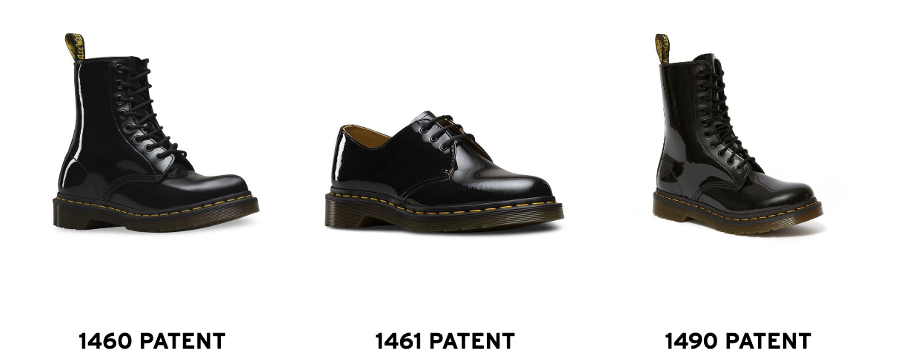
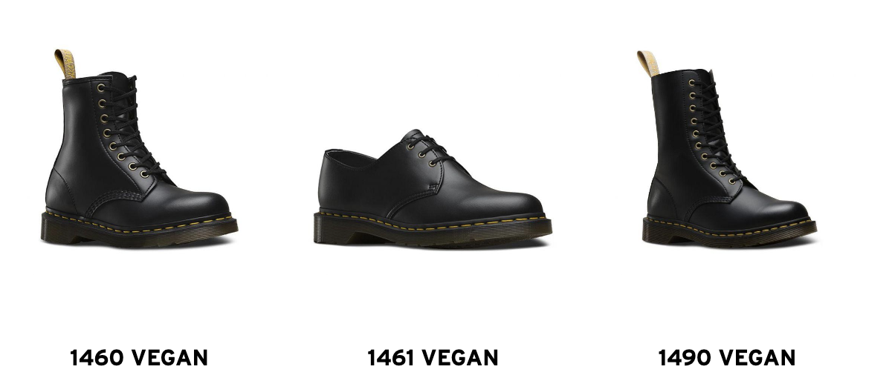
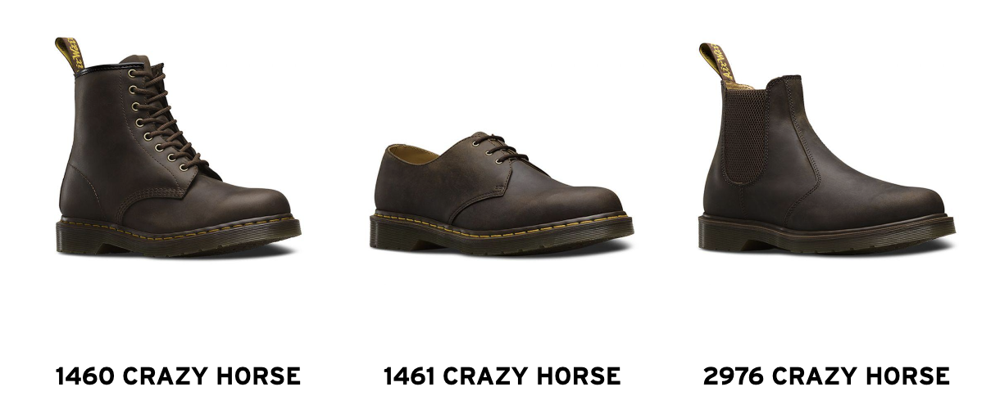

SMOOTH LEATHER
Our recommended smooth leather shoes
Leather source: Corrected grain from Argentina Pair with shoe care: Wonder Balsam Smooth leather epitomises Dr. Martens footwear. Durable and famously stiff to start, it can be polished to a dapper shine or artfully scuffed up. Smooth leather moulds to your foot and gets more comfortable with each wear, creating a personalised fit.
NAPPA & VIRGINIA LEATHER
Our recommended NAPPA & VIRGINIA LEATHER shoes
Leather source: Corrected grain leather from Argentina Pair with shoe care: Wonder Balsam One in the same, our Nappa and Virginia leathers are soft, fine-grain leathers that are treated to feel smooth and supple. With lightweight and luxurious handles, these leathers come with many natural characteristics. They stretch well and are comfortable from your very first outing, with virtually no wearing-in time required.
PATENT LAMPER LEATHER
Our recommended PATENT LAMPER LEATHER shoes
Leather source: PU coated split from China Pair with shoe care: Ultra Protector Patent leather is extra eye-catching, and less stiff than Smooth leather. With a hard, glossy surface finish that reflects the light, it’s virtually waterproof while still containing a very flexible texture. To prevent discolouring and scratches, keep your patent shoes in a soft cloth bag when unworn.
VEGAN “LEATHER”
Our recommended VEGAN “LEATHER” shoes
Leather source: handmade Pair with shoe care: Shoe Polish (for best results, use a damp cloth to clean) Our vegan material is soft and supple with a two-tone finish. We use two core materials to create this ‘leather’. Felix is a vegan alternative to our smooth original leather. It is known technically as microfiber and is a polymer-synthetic material. The filament fibres are so fine, when you look at the reverse of the 1460 Felix, the ‘flesh’ side bears a resemblance to real leather. Cambridge Brush has an antique rub-off two-tone finish. This is a polyurethane coagulate/non-woven material which is given its signature glossy finish on a ‘mopping’ machine.
GAUCHO/CRAZY HORSE LEATHER
Our recommended GAUCHO/CRAZY HORSE LEATHER shoes
Leather source: Full grain from Thailand Pair with shoe care: Wonder Balsam Gaucho/Crazy Horse leather utilises a different tanning technique which enables impressions to be seen along it’s creases when worn. This creates its famous and uniquely brown distressed look. It has a thick, waxy finish while still being lightweight.